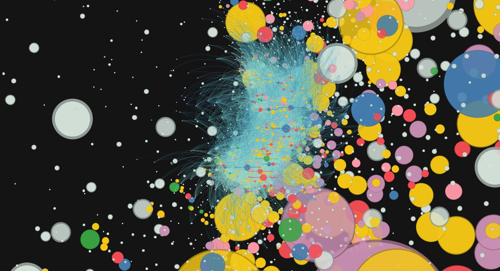
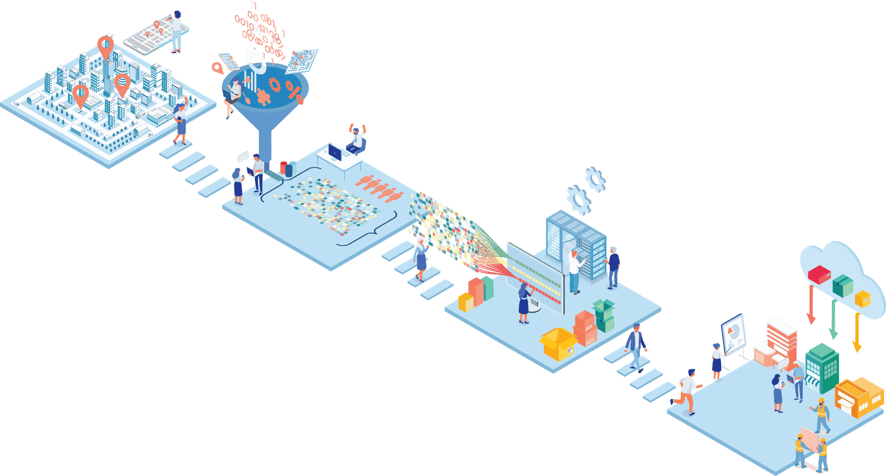

Harrison County Trail Design
A multi-use trail system designed from site survey and LiDAR terrain data, with three trail types for different kinds of recreation, CAD plans, parking layouts, and construction cost estimates. With Texas A&M AgriLife.

Ph.D. student in Urban and Regional Sciences
Texas A&M University
I study how people use urban parks. With smartphone mobility data, I measure who visits, how far they travel, and what those visits are worth, and I bring that evidence into park and trail design.
On the 2026–27 academic job market for faculty positions in landscape architecture and planning.
The map behind shows trips from home neighborhoods to Austin parks. Tap a park to see its visitors.
I’m Zipeng Guo, though most people call me Cooper. I’m a Ph.D. student in Urban and Regional Sciences in the Department of Landscape Architecture and Urban Planning at Texas A&M University, where I work with Dr. Yang Song.
My research asks how people actually use urban parks: who visits, how far they travel, how heat, trees, highways, and crime change those visits, and what the visits are worth to a city. Most of this work draws on smartphone mobility data, GIS, and machine learning.
I came to research through design. I earned a B.S. (2020) and a Master of Landscape Architecture (2022) at the University of Idaho, and was named a Landscape Architecture Foundation Olmsted Scholar in 2022. At Texas A&M I co-teach the undergraduate landscape design studio and work on community parks, trails, and therapeutic gardens across Texas.

Latest article, 2026
Most parks are free to enter, so the value they deliver rarely shows up on a balance sheet. This study applies the zonal travel cost method to smartphone mobility data for parks in Austin, Texas: it traces where visitors come from and how far they travel, and turns those trips into an estimate of each park’s recreational value.
Guo, Z., Song, Y., Lu, H., Zhu, R., Zhang, Y., Yoon, H., & Zhang, B. Computational Urban Science, 6, Article 23.
Read the articleParks are among the few public goods that people choose to use. My work treats those choices, recorded at scale by smartphones, as evidence for how parks should be valued, designed, and made reachable.
Because most parks are free, their benefits are hard to price. I adapt the travel cost method to smartphone mobility data, using where visitors come from and how far they travel to estimate what individual parks are worth.

Which design choices bring people to a park, and which keep them away? I combine tree structure, land surface temperature, and park features with visit records, using explainable machine learning to see how canopy, heat, and amenities shape when people come and how long they stay.
A park nearby is not the same as a park people can reach. With fixed-effects and spatial models, my coauthors and I study how highways, crime, and segregation change who visits urban parks in Austin.
I bring the same data into design: LiDAR terrain models for trail alignment, cost and feasibility tools for small Texas communities, and studies of how green infrastructure and stormwater practices perform.
Citations and the latest list are on Google Scholar.
I teach design by starting from how people actually use a place.
In the LAND 212 studio, students observe behavior on site, map what they see, and turn it into plazas, pocket parks, and community parks, including a 2026 community project for Harrison County, Texas. I pair hand drawing and physical models with GIS and LiDAR so that students can test an idea against the ground it sits on.
Since 2021 I have taught or helped teach nine studios and courses, reaching about 180 students, and given guest lectures on GIS for landscape design.
| Term | Course | Role | Students |
|---|---|---|---|
| Spring 2026 | LAND 212 Landscape Design IITexas A&M University, undergraduate studio | Co-instructor | 39 |
| Spring 2026 | URPN 325 GIS in Urban PlanningTexas A&M University | Guest lecturer | 17 |
| Fall 2025 | LAND 601 Landscape Design StudioTexas A&M University, graduate studio | Teaching assistant | 6 |
| Spring 2025 | LAND 212 Landscape Design IITexas A&M University, undergraduate studio | Co-instructor | 43 |
| Fall 2024 | LAND 601 Landscape Design FundamentalsTexas A&M University, graduate studio | Studio teaching | 5 |
| Spring 2024 | LAND 212 Landscape Design IITexas A&M University, undergraduate studio | Co-instructor | 38 |
| Fall 2023 | URPN 220 Digital CommunicationTexas A&M University | Teaching assistant | 19 |
| Fall 2023 | LAND 601 Landscape Architecture Design Theory and ApplicationTexas A&M University | Co-teaching | 12 |
| 2022 | LARC 380 Water Conservation TechnologiesUniversity of Idaho | Lecturer | 8 |
| 2021 | LARC 210 Landscape Architecture Representation and MediaUniversity of Idaho | Teaching assistant | 16 |
Design and planning work with small towns, hospitals, schools, and county park departments across Texas.
A multi-use trail system designed from site survey and LiDAR terrain data, with three trail types for different kinds of recreation, CAD plans, parking layouts, and construction cost estimates. With Texas A&M AgriLife.
Site and landscape proposals for the City of Alto, including circulation, parking, and cost estimates prepared to support funding applications.
Cost tables, budgeting worksheets, and lifecycle planning tools that help small communities price trails, parking, signage, planting, and lighting.
A rooftop garden for patients and staff, designed around sensory engagement, biophilic design, and quiet, passive use.
A nature-based garden for early childhood education, designed to universal-access and play-safety standards (ASTM F1487, CPSC).
Park inventory, recreation-standard analysis, and concept plans for nine parks covering more than 160 acres.